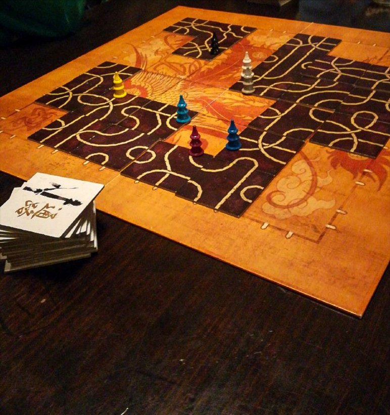

TSURO

20/25 minuti 2-8 8+
Svolgimento del turno
Ogni turno ha tre fasi,eseguite sempre nello stesso ordine :
1. Giocare una tessera
2. Muovere il pedone
3. Pescare una nuova tessera
Il giocatore che al momento sta eseguendo il proprio turno è detto giocatore attivo.
1. Giocare una tessera
Il giocatore attivo sceglie una tessera tra quelle che ha in mano e la posiziona in un quadrato libero adiacente la
casella con il suo pedone. Il giocatore può posizionare la tessera in ogni direzione, orientata a piacere.
Una volta che una tessera è stata posizionata, non può più essere mossa per il resto del gioco.
2. Muovere il pedone
Il giocatore attivo muove il proprio pedone alla fine della via aperta.
Nel primo turno, il giocatore può scegliere
quale delle due vie usare tra le due dove si è posizionato.
3. Pescare una tessera
Il giocatore attivo pesca una tessera dalla cima dei una delle due pile di tessere inutilizzate.
Il turno del giocatore attivo si chiude e si passa la mano al prossimo giocatore in senso orario.
Muovere il pedone di un altro giocatore
Se ci sono altri pedoni vicino alla tessera appena posizionata, si muovono tutti quanti fino alla fine del percorso
se è stato allungato.
Eliminazione
Esistono due modi per essere eliminati una volta che una nuova tessera è stata posizionata:
- Se la fine del
tracciato raggiunge un bordo del tabellone: il pedone su quel percorso viene eliminato.
-Se le vie di due giocatori si scontrano (una verso l'altra), entrambi i giocatori sono connessi
(correndosi incontro), quindi sono entrambi eliminati dal gioco: i loro pedoni sono rimossi dal gioco.
Ogni giocatore eliminato rimuove il proprio pedone e posiziona le tessere che aveva in mano davanti a sé.
Vittoria
Quando rimane un solo pedone sul tabellone, quel giocatore ha vinto! Se gli ultimi due giocatori sono eliminati
nello stesso momento a causa di uno scontro hanno vinto entrambi.
RECENSIONE
Il gioco si presenta esteticamente molto bene, con delle raffigurazioni raffinate di draghi giapponesi che vengono ripresi e stilizzati nelle pedine. Tsuro è un gioco molto veloce, che ti invoglia a fare più partite consecutive. Abbiamo notato però che dai 2 ai 4 giocatori il gioco presenta delle dinamiche più lunghe e lente, mentre giocando in più di 4 giocatori, la partita diventa più scorrevole, dinamica e divertente.